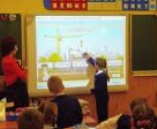

Процессы информатизации современного общества и тесно связанные с ними процессы информатизации всех форм образовательной деятельности характеризуется процессами совершенствования и массового распространения современных информационных и коммуникационных технологий (ИКТ).

На этом ресурсе представлены учебные материалы, которые позволят учителю лучше ориентироваться в возможностях современного программного обеспечения в области образования.